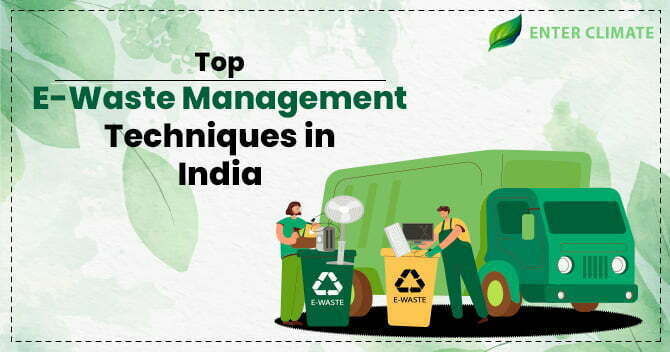

Todays gadgets are Tomarrows Waste
Electronic waste, or e-waste,
refers to electronic products that
have become unwanted, non-working,
or obsolete, and have essentially
reached the end of their useful life.
As technology advances, the lifespan
of electronic devices is decreasing,
leading to a growing problem of
e-waste. Proper management
and disposal of e-waste is crucial
to minimize its impact on the
environment and human health.
About Ewaste
Electronic waste (e-waste), is a generic term used to describe all types of old,
end-of-life or discarded electrical and electronic equipment, such as household appliances;
office information and communications equipment; entertainment and consumer electronic equipment; lighting equipment; electric and electronic tools; toys; and leisure,
sports and recreational equipment that are powered by electricity. E-waste contains both valuable and hazardous materials that require special handling and recycling methods.
E-waste, electronic waste, e-scrap and end-of-life electronics are terms often used to describe used electronics that are nearing the end of their useful life,
and are discarded, donated or given to a
The UN defines e-waste as any discarded products with a battery or plug,
and features toxic and hazardous substances such as mercury,
that can pose severe risk to human and environmental health.
